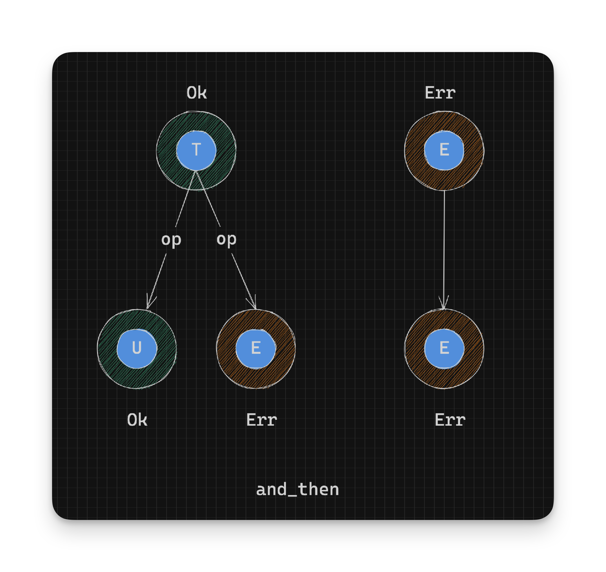
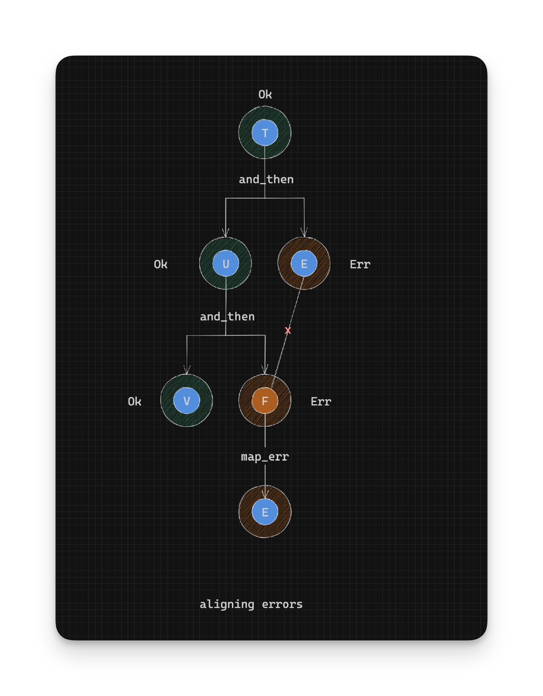

Working With Rust Result - Combining Results - Part 6
Result gets interesting when you need to combine multiples to give you one final Result.
and_then
Sometimes when you have multiple functions that return Results, you want to know if all of them succeeded or any of them failed. and_then can help you there. and_then is defined as:
pub fn and_then<U, F: FnOnce(T) -> Result<U, E>>(self, op: F) -> Result<U, E> {
match self {
Ok(t) => op(t),
Err(e) => Err(e),
}
}From the above definition, the function op is run on the success value within an Ok instance. This is very similar to map, with the main difference being that the function op returns another Result instead of another type. It’s important to note that since op returns a Result we can choose whether to return an Ok or Err instance at this point. and_then gives us the power to make a decision.
Unlike
mapthere is no wrapping of the result in anOkconstructor asopalready returns aResult.
// pseudocode
// Given: Result<T, E>
// Return type: Result<U, E>
op: T -> Result<U, E> // Converts a success value into another Result (Ok or Err)
Ok(t:T) -> op(t) -> Ok(U) or Err(E) // Return converted value in Ok or Err as a Result<U, E>
Err(e:E) -> Err(e) // Return existing error as Result<U, E>
Given the following function that parses a string to a u32 or returns a ParseIntError:
use std::num::ParseIntError;
use std::str::FromStr;
fn parse_number(value: &str) -> Result<u32, ParseIntError> {
u32::from_str(value)
}Let’s try and parse a string number with parse_number and multiply its value by 2:
parse_number("10") // Result<u32, ParseIntError>
.and_then(|value| {
// We have successfully parsed "10" into 10.
let new_result = ten * 2; // Multiply by 2
todo!() // What do we return here?
})Given that we have to use a function that also returns a Result from and_then we can wrap new_result in the Ok constructor:
parse_number("10") // Result<u32, ParseIntError>
.and_then(|ten| {
// We have successfully parsed "10" into 10.
let new_result = ten * 2 // Multiply by 2
Ok(new_result) // Result<u32, ParseIntError>
})Aligning error types
If we want to fail our calculation for some reason we can return an Err:
struct MyError(String);
parse_number("10") // Result<u32, ParseIntError>
.and_then(|one| {
// We have successfully parsed "10" into 10.
parse_number("20")
.and_then(|two| {
// We have successfully parsed "20" into 20.
// but we don't like even numbers...
if two % 2 == 0 {
Err(MyError("I don't add even numbers".to_owned())) // Result<u32, MyError>
} else {
Ok(one + two) // Result<u32, ParseIntError>
}
})
})But we can an error!:
error[E0308]: mismatched types
--> src/main.rs:86:23
|
86 | Err(MyError("I don't add even numbers".to_owned()))
| --- ^^^^^^^^^^^^^^^^^^^^^^^^^^^^^^^^^^^^^^^^^^^^^^ expected `ParseIntError`, found `MyError`
| |
| arguments to this enum variant are incorrect
|
help: the type constructed contains `MyError` due to the type of the argument passed
--> src/main.rs:86:19
|
86 | Err(MyError("I don't add even numbers".to_owned()))
| ^^^^----------------------------------------------^
| |
| this argument influences the type of `Err`Which points to the real cause:
expected
ParseIntError, foundMyError
What this means is that when you are chaining Results through and_then functions, all the Err types need to be the same. We can change the Ok type as
much as we want but we have to align the Err types. This is just something to keep in mind when using Result. If you have functions that return Results with different
Err types, you can create a common error type and convert each error into that type using something like map_err, which we will cover later.
For completeness, here’s how you align your error types with map_error:
parse_number("10")
.map_err(|e| MyError(e.to_string())) // Result<u32, MyError>
.and_then(|one| {
// We have successfully parsed "10" into 10.
parse_number("20")
.map_err(|e| MyError(e.to_string())) // Result<u32, MyError>
.and_then(|two| {
// We have successfully parsed "20" into 20.
// but we don't like even numbers...
if two % 2 == 0 {
Err(MyError("I don't add even numbers".to_owned())) // Result<u32, MyError>
} else {
Ok(one + two)
}
})
})
- Continue on to Chaining with Map
- Back to TOC